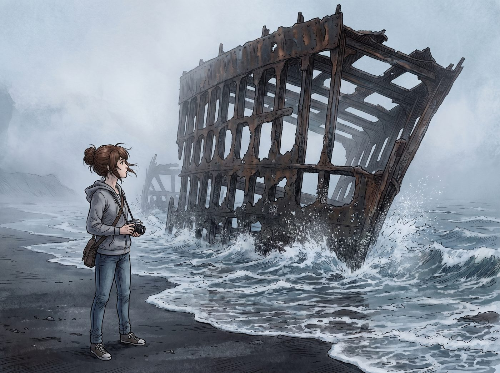
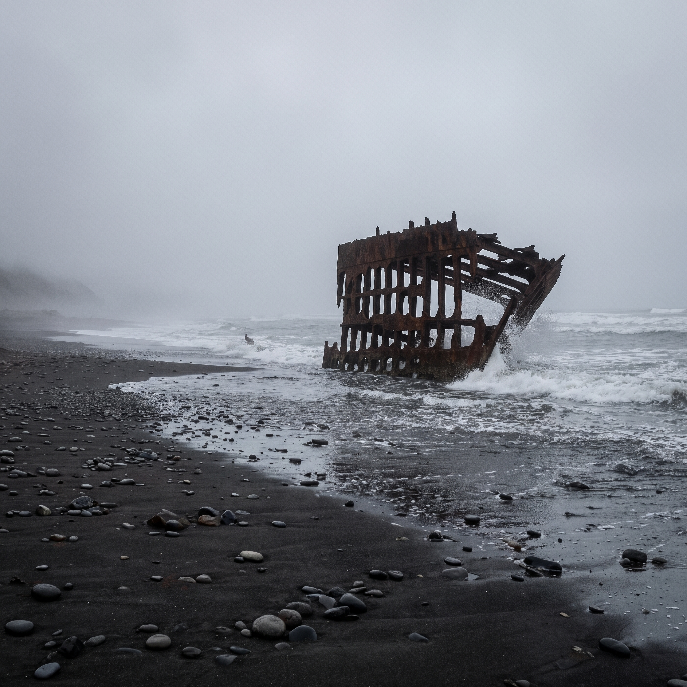
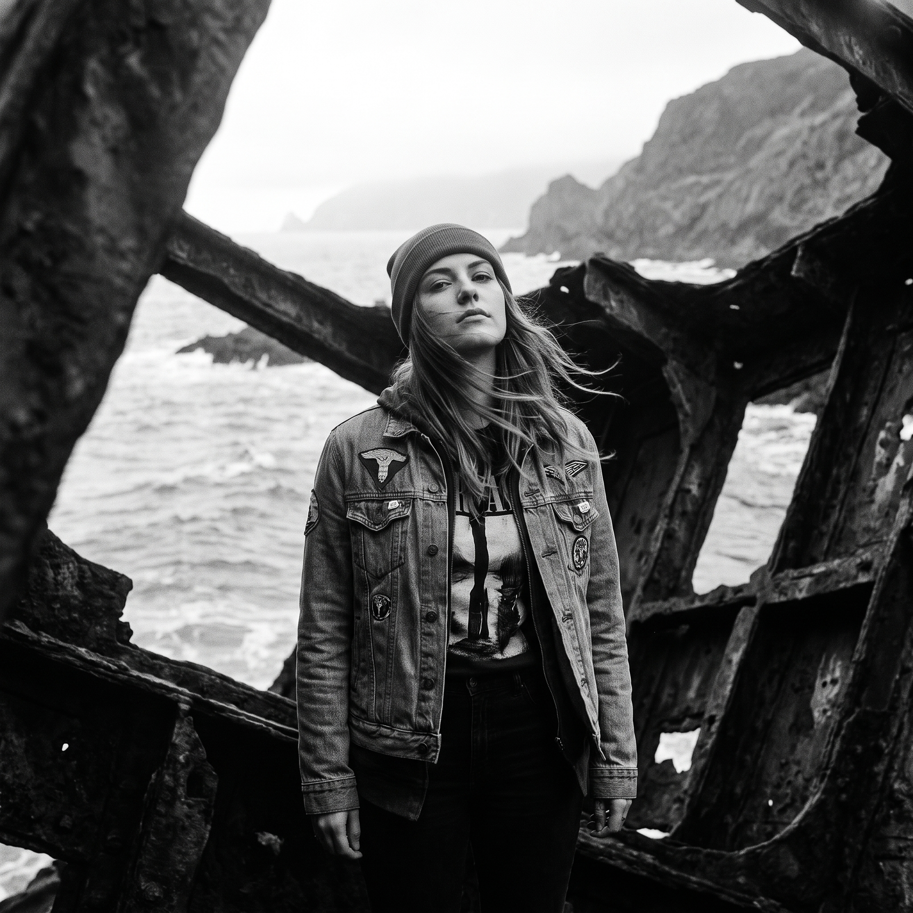

沉船與膠片



一、黑沙灘上的巨獸
離開奧林匹亞,兩人一路向南,抵達阿斯托利亞外圍那片著名的黑沙灘。
退潮後的哥倫比亞河口,霧氣還未完全散去,那艘百年英國四桅帆船的鏽蝕鋼鐵殘骸,巨大的肋骨狀結構插在海浪與迷霧之間,陰鬱的太平洋冷風,把浪花一陣陣拍碎在鏽跡斑斑的船骸上,場面壯闊得近乎超現實。
Max 站在沙灘上,望著那副龐大而荒涼的骨架,呼吸都下意識放輕了。
「這才是,」她喃喃自語,語氣裡帶著一種近乎虔誠的震動,「我這幾年最想拍到的畫面。」
二、傳世肖像
她迅速換上一卷高對比度的黑白膠捲,趁著晨霧即將散去、光線最柔和純粹的那短短十幾分鐘,指揮 Chloe 站進那副生鏽的船骨中央。
「往左邊一點,」Max 透過取景框調整構圖,語氣專注而篤定,「下巴稍微抬高——對,就是這樣,別動。」
Chloe 站在那片巨大陰影的懷抱裡,海風吹得她的髮絲和衣角獵獵作響,身後是鏽蝕的鋼鐵殘骸與翻湧的灰色海浪,那個瞬間,她整個人彷彿與這片荒涼的壯闊融為一體。
快門按下的聲音,在風聲裡格外清晰。
三、既視感
拍完這組照片,Max 意猶未盡,想繞到船骸的另一側,尋找更多角度。兩人深一腳淺一腳地踩過濕軟的黑沙,繞到殘骸背陰的一面。
那裡的光線更加陰暗,鏽蝕的鋼鐵結構在霧氣裡投下扭曲的陰影,幾道鏤空的鋼樑構造,詭異地拼湊出一種說不出的壓迫感。
Chloe 忽然停下腳步,盯著眼前這片結構,眉頭皺了起來。
「等等,」她的聲音有點發緊,「這個角度……妳有沒有覺得,這船的骨架結構,跟——」
「跟那間旅館的走廊結構,」Max 的臉色也跟著變了,聲音發乾,「詭異地相似?」
兩人幾乎是同時想起了那晚在旅館裡逃命的記憶——那些狹窄、扭曲、彷彿刻意設計來製造窒息感的空間結構,此刻竟詭異地跟眼前這片鏽蝕鋼骨的陰影重疊在了一起。
「不會吧,」Chloe 的手心開始冒汗,下意識往後退了一步,「這地方不會也……」
四、工作人員的介入
就在氣氛越發緊繃之際,遠處忽然傳來一陣腳步聲——一名穿著地標保護管理處制服的工作人員,快步朝她們走來,語氣裡帶著職業性的警覺。
「兩位,」他揚聲喊道,「這片區域已經超出開放拍攝範圍了,退潮時段結構不穩定,麻煩往回走。」
Chloe 和 Max 對視一眼,那股毛骨悚然的緊張感,瞬間被這句公事公辦的提醒打斷,兩人幾乎是同時鬆了口氣,又同時覺得有點好笑。
「抱歉,」Max 連忙應聲,拉著 Chloe 往回走,「我們馬上過去。」
工作人員點點頭,轉身要走,卻被 Chloe 忍不住叫住。
「等等,」她狀似隨意地開口,「這艘船,叫什麼名字來著?」
「彼得·艾爾戴爾號,」工作人員頭也不回地答道,「一八九零年代擱淺在這裡的,已經一百多年了。」
聽到這個陌生的名字,跟她們腦子裡瞬間閃過的那個聯想毫無關係,兩人這才徹底鬆懈下來,忍不住相視失笑。
「我還以為,」Chloe 拍拍胸口,語氣裡帶著劫後餘生般的誇張,「這又是哪個模仿犯的新據點。」
「妳這反應也太快了,」Max 笑著搖頭,「一個破船骨架,都能讓妳聯想到那種地方。」
「那能怪我嗎,」Chloe 聳肩,重新望向那片壯闊卻不再讓人毛骨悚然的殘骸,「我們倆這陣子的經歷,換誰都會有陰影。」
兩人並肩走回開放拍攝區,身後,那艘沉睡了一百多年的鏽蝕巨船,在漸漸散去的晨霧裡,重新只是一片單純壯麗的風景,再沒有半點令人窒息的既視感。